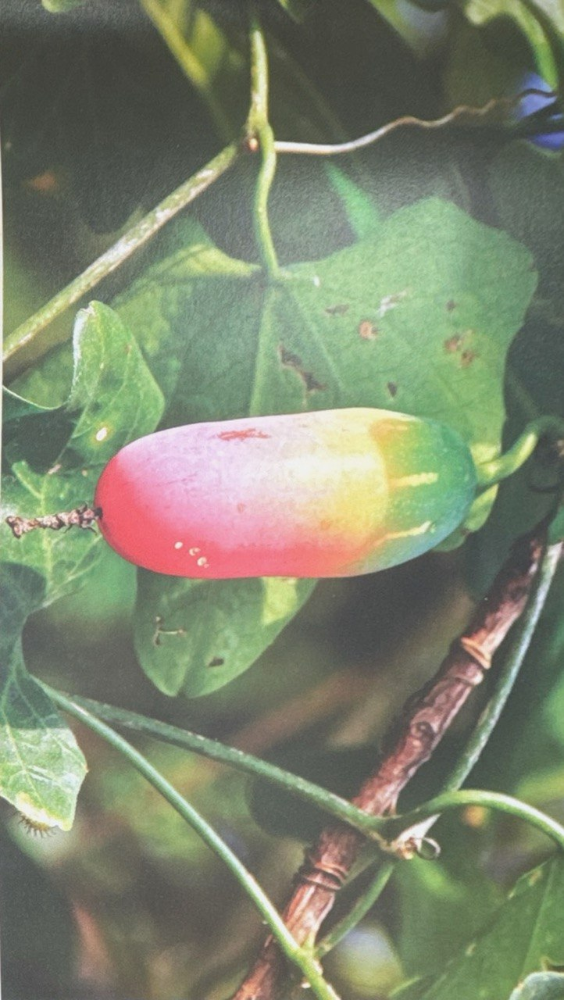

FRIM LIBRARY WEEKLY QUIZ
Week 01 - Question 2

What is the fruit of Coccinia grandis (L.) Voigt. traditionally believed to be used for?
Coccinia grandis (L.) Voigt., also known as timun tikus, is a wild climbing plant found in Malyasia and other parts of Asia.